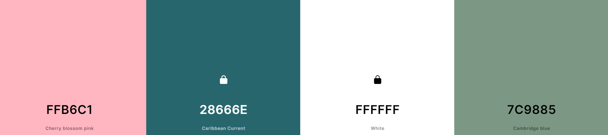

Site Name
This is the name of my the piano studio entity that I currently run in Roanoke, VA. Eventually, I would love to have the domain name creativekeysva.com or creativekeysroa.com however, that is not financially an option.
Site Purpose
The purpose of this site is make potential clients in my area aware of my piano studio and encourage them to reach out for private lessons.
Scenarios
Where are you located?
I am located in Salem, VA close to Electric Road. I am convenient to Salem, North Lake(Roanoke), Hidden Valley(Roanoke), Hollins(Roanoke) and Botetourt areas of the Greater Roanoke Valley.
What piano methodology do you teach?
I primarily teach out of the Piano Adventure Books but but particular emphasis on finding extra peices that will encourage artistry and creativity for the individual student. This includes peices that the student will enjoy.
What ages do you teach?
I generally teach all ages; however, I do recommend starting group music exploration classes for student under 4. I find these types of classes are more engaging and effective for the younger learners. They are generally ready to learn piano between the ages of 4-5.
What are your prices
I charge $50/hour for lessons in my home and $58/hour for lessons in which I travel to your home. Lessons duration is 30 min.
What hours do you teach?
I currently teach during the 5PM-7PM hours, reach out for specific openings.
Color Schema
The colors I have chosen correlate with the colors of a creative mindset, in my eyes. I plan on having the main portion of the website being white with the colors being added as accents. The blue/green will be used in the aside, header and footer to accent the separation. The pink will be used as the background color and for the hover for the navigation and the green will be for other accenting as needed.
Typography
The headings will be represented by the font-family "Gochi Hand". The paragraphs and other words (footer etc.) will be presented in the "Open Sans" font.